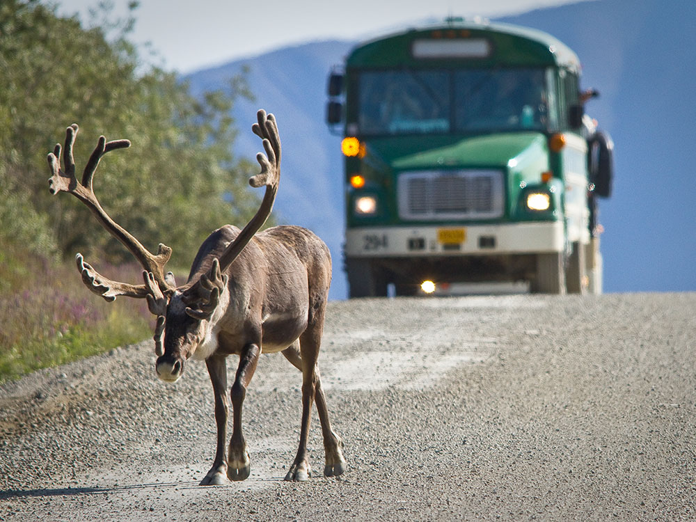
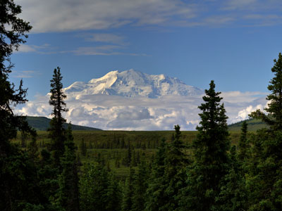
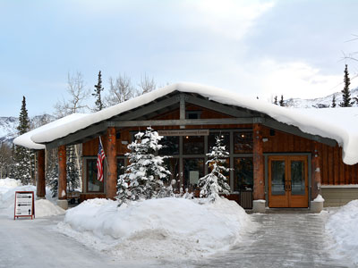
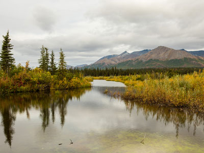
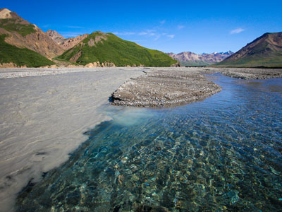
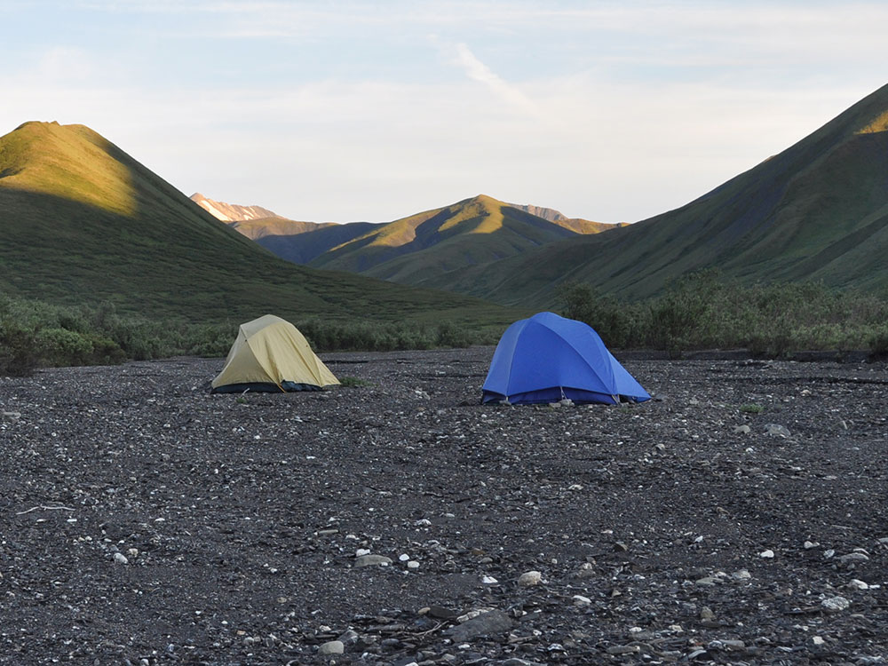
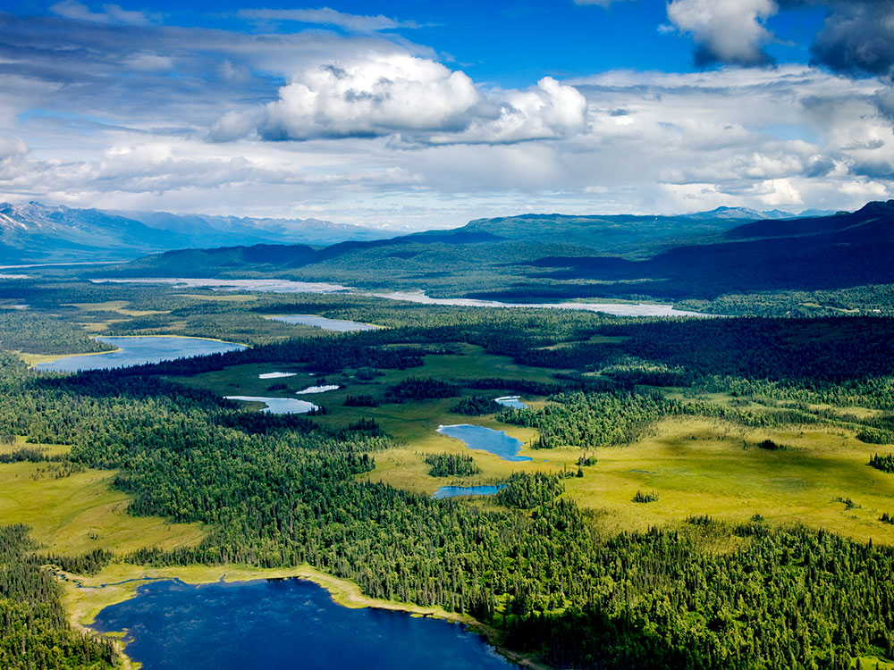
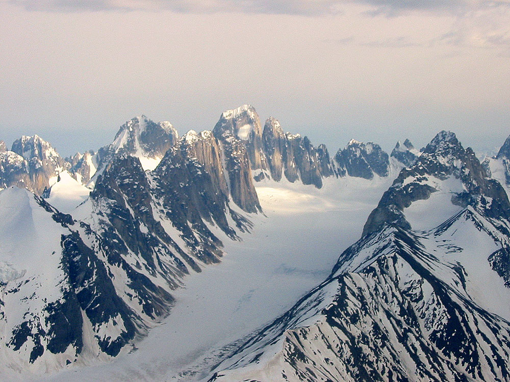

.jpg){kind=link}
Vast protected wilderness featuring North America’s tallest peak, abundant wildlife, tundra ecosystems, and limited-access backcountry experiences centered around a single scenic road.
General Information
Denali Visitor Center: Mid-May through mid-September
Murie Science and Learning Center: Winter visitor center
Park buses operate mid-May through mid-September (in 2026, buses traveled only to East Fork, mile 43; service to Kantishna is planned to resume in 2027)
Children 15 and under: Free
Accepts America The Beautiful Pass
Additional fees apply for bus tours, camping, and guided activities
Healy (12 mi north)
Cantwell (30 mi south)
How to Get There
From Healy (12 mi): Take Parks Hwy (AK-3 S) for about 12 miles to the main park entrance and visitor center area.
Overview
Denali National Park and Preserve protects six million acres of Interior Alaska wilderness, an area larger than the state of New Hampshire. At its heart is Denali, which rises to 20,310 feet as the highest peak in North America. From base to summit, it rises about 18,000 feet, one of the largest vertical rises of any mountain on land. Below the mountain, the park is a vast landscape of taiga forest, open tundra, braided glacial rivers, and the snowy peaks of the Alaska Range, crossed by a single 92-mile road. It is one of the best places in North America to see large wild animals in their natural habitat.
The park was established in 1917 as Mount McKinley National Park, largely through the efforts of naturalist and hunter Charles Sheldon, who wanted to protect the area's Dall sheep and other wildlife from market hunters. In 1980, the Alaska National Interest Lands Conservation Act tripled the park's size and renamed it Denali National Park and Preserve, using the Koyukon Athabascan name for the mountain, often translated as "the high one." (The U.S. government restored the name Mount McKinley for the peak itself in 2025, but the park's name did not change.) Today, around half a million people visit each year. Most ride the park's buses into the wilderness hoping to spot the "Big Five" (grizzly bears, moose, caribou, Dall sheep, and wolves) and to catch a glimpse of the often cloud-covered mountain.
Park Sections
Most visitors explore the park along the Denali Park Road, which runs 92 miles west from the park entrance on the Parks Highway to the old mining community of Kantishna. The entrance area is the park's hub, with the Denali Visitor Center, the Murie Science and Learning Center, the sled dog kennels, Riley Creek Campground, and most of the park's marked trails. The first 15 miles of the road, to the Savage River area, are paved and open to private vehicles. Beyond Savage River, the road turns to gravel and is open mainly to park buses. It passes the Teklanika River, Sable Pass, Polychrome Overlook, the Toklat River, Eielson, and Wonder Lake on the way to Kantishna. On the south side of the Alaska Range, the town of Talkeetna is the base for flightseeing and for climbers attempting Denali. The rest of the park is trailless wilderness.
Sightseeing and Scenic Drives
The Denali Park Road is one of the great wildlife drives in the world. On clear days, Denali is visible from as close to the entrance as mile 9, and the road climbs over open passes and along river valleys where bears, caribou, and Dall sheep are commonly seen. Popular stops include the Savage River area, Teklanika River, Polychrome Overlook, with its colorful volcanic hills, and the Toklat River. In 2021, a landslide at Pretty Rocks near mile 45 closed the road beyond East Fork (mile 43). A new bridge over the slide was completed in September 2026, but buses traveled only as far as East Fork for the 2026 season. Bus service to the end of the road at Kantishna is planned to resume in phases starting in 2027. Flightseeing tours from Talkeetna, Healy, and the park entrance area offer views of Denali's summit and, on some tours, landings on glaciers.
Hiking
Denali has only a few miles of marked trails, almost all of them near the park entrance and Savage River. Easy walks include the Horseshoe Lake Trail, which loops past a beaver-dammed lake, the Taiga Trail, and the 2-mile Savage River Loop along the river at mile 15. Moderate to strenuous trails include the Savage Alpine Trail (about 4 miles), the steep Mount Healy Overlook Trail, which gains about 1,700 feet to views of the Alaska Range, and the 9.5-mile Triple Lakes Trail, the longest in the park. Beyond the trails, Denali is famous for off-trail hiking. Visitors can get off a bus almost anywhere along the road and hike cross-country across the tundra and gravel riverbeds. Rangers lead free "Discovery Hikes" into the backcountry in summer, and overnight backpackers need a free backcountry permit.
Other Activities
Riding a park bus is the most popular activity in Denali. Visitors can choose from narrated tour buses or less expensive transit buses, which let riders get off and back on along the road. See Denali Bus Trips for routes, prices, and free shuttle options. Denali is the only national park in the United States with a working team of sled dogs, which patrol the park's wilderness in winter, and free sled dog demonstrations at the kennels are a summer favorite. Denali is also one of the world's great mountaineering challenges. More than a thousand climbers attempt the summit each year, mostly from May through July, and the climb typically takes two to three weeks. Other activities include flightseeing, biking the park road, ranger programs, and rafting on the Nenana River just outside the park. In winter, visitors can go dog mushing, cross-country skiing, snowshoeing, and fat-tire biking and can watch the northern lights.
Flora and Wildlife
Denali is one of the best places in Alaska to see wildlife. Its famous "Big Five" are grizzly bears, moose, caribou, Dall sheep, and wolves, and many of them are commonly spotted from the park road, where buses stop for viewing. The park is also home to red foxes, lynx, snowshoe hares, arctic ground squirrels, hoary marmots, and more than 160 kinds of birds, including golden eagles and willow ptarmigan, Alaska's state bird. Spruce taiga forest covers the lower valleys, giving way to open tundra higher up. In summer, the tundra is dotted with wildflowers, and fireweed blooms along the roads. In late August and early September, the tundra turns brilliant shades of red, orange, and gold. Visitors must stay at least 300 yards from bears and wolves and 25 yards from other wildlife.
Access
Denali is in Interior Alaska along the Parks Highway (Highway 3), about 240 miles (4.5 hours) north of Anchorage and 120 miles (2.5 hours) south of Fairbanks. The closest major airports are in Anchorage and Fairbanks. In summer, the Alaska Railroad's Denali Star train runs daily from Anchorage and Fairbanks to the Denali depot near the visitor center, a scenic trip that is popular with visitors. Private motorcoach shuttles also run to the park from Anchorage, Fairbanks, Talkeetna, and Seward. Once at the park, visitors with cars can drive only the first 15 miles of the park road and must take a bus beyond Savage River.
Seasons
Denali's main visitor season runs from about mid-May to mid-September, when the buses, visitor centers, and most campgrounds operate. Summer brings nearly 20 hours of daylight in June, mild temperatures, wildflowers, and the best wildlife viewing, but also mosquitoes and frequent clouds that hide the mountain. Late August and early September bring fall colors, fewer crowds, and the first snow. In winter, temperatures can drop to -40°F and daylight shrinks to just a few hours, but the park stays open. The road is plowed to the Mountain Vista area at about mile 13, and visitors can ski, snowshoe, mush dogs, and watch the northern lights. In spring, before buses start running, private vehicles may be allowed to drive farther along the road, conditions permitting.
Camping and Lodging
The park has six campgrounds along the road. Riley Creek, near the entrance, is open all year. Savage River, Sanctuary River, Teklanika River, and Igloo Creek are farther in, and Wonder Lake is near the end of the road. Wonder Lake was closed during the Pretty Rocks road closure and is expected to reopen in 2027. Campsites are reserved through the park's concessioner. At the end of the road, private lodges in Kantishna offer remote wilderness stays. During the road closure, they have been reachable only by air. Just outside the entrance, the area known as Nenana Canyon (or "Glitter Gulch") has the largest concentration of hotels, restaurants, and shops, including several large lodges. More lodging is available in Healy, about 12 miles north, in the McKinley Park and Carlo Creek areas a few miles south, and in Cantwell, about 30 miles south. Talkeetna, about 2.5 hours south, is a popular base with lodges that offer views of Denali on clear days.
Visitor Centers
The Denali Visitor Center, about 1.5 miles inside the park entrance, is the main visitor center from mid-May to mid-September. It has exhibits, a film, a bookstore, ranger programs, and trailheads nearby. The Murie Science and Learning Center serves as the park's winter visitor center. The Wilderness Access Center, near Riley Creek, is where visitors pick up bus tickets and campground reservations, and the Backcountry Information Center issues backcountry permits. Deep in the park, the Eielson Visitor Center at mile 66 has been closed since the Pretty Rocks landslide. The Walter Harper Talkeetna Ranger Station in Talkeetna serves Denali mountaineers and visitors on the park's south side.
Shuttle System
Because private vehicles cannot drive past Savage River, buses are the main way to see the park. Free courtesy shuttles run in summer around the entrance area, including the Riley Creek Loop, the Savage River Shuttle to mile 15, and the Sled Dog Kennels Shuttle. Fee-based transit buses provide hop-on, hop-off service deeper into the park. Narrated tour buses, including the Denali Natural History Tour and the Tundra Wilderness Tour, offer guided trips with a focus on wildlife. During the 2026 season, all buses turned around at East Fork (mile 43), and service to Kantishna is planned to return in 2027. Bus tickets should be reserved well in advance for the summer. To reach the park, the Alaska Railroad and private motorcoach companies offer service from Anchorage, Fairbanks, and other towns.
This article uses material from the Wikipedia article "Denali National Park and Preserve", which is released under the Creative Commons Attribution-Share-Alike License 3.0
This article uses material from nps.gov "Denali National Park and Preserve", from Alaska's News Source "New bridge opens in Denali Park following landslide at Pretty Rocks", and from Alaska Public Media "National Park Service proposes more cars and tour buses in Denali National Park"
Featured Locations and Trails

Photo (c)2006 Derek Ramsey (Ram-Man), GFDL 1.2, via Wikimedia Commons; Image Size Adjusted

Denali
Massive glaciated peak rising above tundra and boreal forest landscapes, forming the highest elevation point on the continent and a centerpiece of a vast protected wilderness.
Photo (c)2006 Derek Ramsey (Ram-Man), GFDL 1.2, via Wikimedia Commons; Image Size Adjusted
Denali Sled Dog Kennels
Working sled dog facility where visitors can meet Alaska huskies, learn about wilderness stewardship, and experience a living tradition that continues to support backcountry operations.

Denali National Park and Preserve, Public domain, via Wikimedia Commons; Image Size Adjusted

Denali Bus Trips
Narrated tour buses, hop-on hop-off transit buses, and free shuttles that carry visitors along the Denali Park Road, with 2026 pricing for each option.

Denali National Park and Preserve, Public domain, via Wikimedia Commons; Image Size Adjusted
.jpg){kind=link}
Kantishna
Remote backcountry area featuring historic mining remnants, wilderness lodges, and access to pristine landscapes deep within protected natural surroundings.

Denali National Park and Preserve, Public domain, via Wikimedia Commons; Image Size Adjusted
.jpg){kind=link}
Murie Science and Learning Center
Education and research facility offering exhibits, ranger programs, and interactive displays that explore wildlife, ecosystems, and science in a northern wilderness environment.

Diego Delso, CC BY-SA 4.0, via Wikimedia Commons; Image Size Adjusted

Nenana River
Glacially fed river known for whitewater rafting, scenic views, and wildlife habitat flowing through rugged mountain landscapes and boreal forest.
-400.jpg)
English: NPS Photo / Emily Mesner, Public domain, via Wikimedia Commons; Image Size Adjusted
.JPG){kind=link}
Polychrome Overlook
Scenic roadside overlook offering sweeping views of multicolored mountain slopes, broad glacial valleys, and some of the most iconic wilderness scenery visible along the Denali Park Road.
English: NPS Photo / Emily Mesner, Public domain, via Wikimedia Commons; Image Size Adjusted
Teklanika River
Cold glacial river corridor flowing through wide tundra valleys and rugged terrain, offering scenic views, wildlife habitat, and remote backcountry access.

Denali National Park and Preserve, Public domain, via Wikimedia Commons; Image Size Adjusted
.jpg){kind=link}
Toklat River
Braided glacial river winding through broad tundra valleys, known for scenic overlooks, wildlife viewing, and dramatic mountain backdrops.




